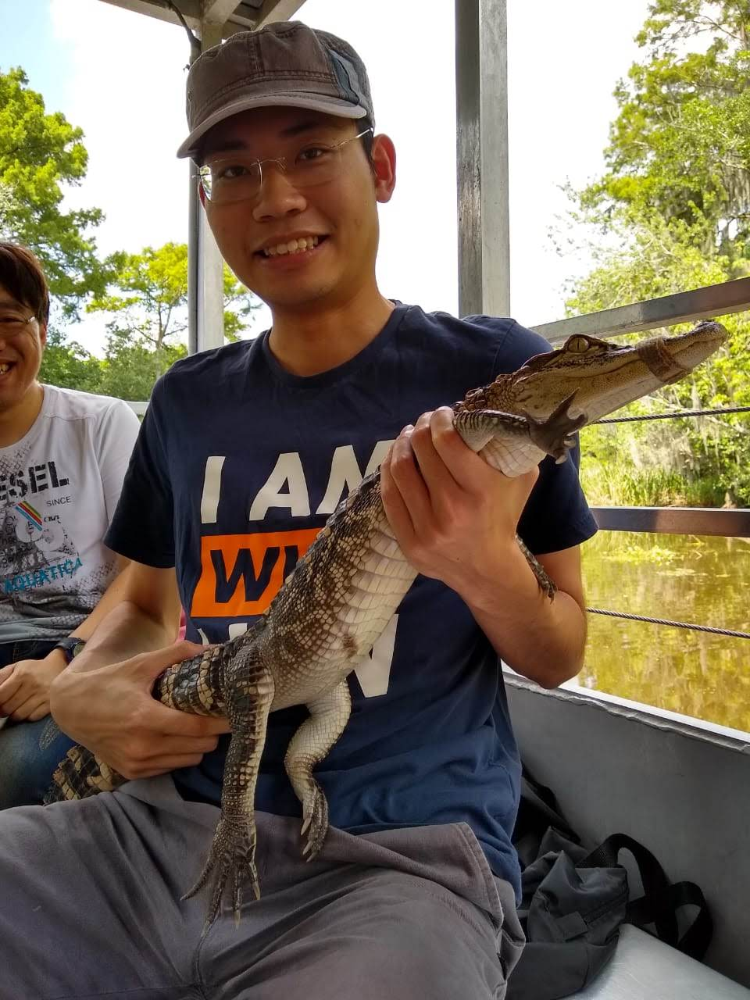

|
Zixuan Ke
I am a 4th-year Ph.D. student at the University of Illinois, Chicago, where I am advised by Prof. Bing Liu.
Prior to that, I received my M.Sc. in Computer Science from the University of Texas, Dallas and was advised by Prof. Vincent Ng.
I am broadly interested in machine learning and natural language processing.
I have closely worked with Hu Xu from Meta AI and Lei Shu from Google Research.
During my Ph.D., I worked as a research intern at Meta AI, Amazon AI and Tencent AI Lab.
In basic research, I work on continual and lifelong learning, multitask and transfer learning
(NeurIPS20,
21,
22).
In applied research, I work on various natural language processing tasks, such as
LM pre-training (EMNLP22),
continual LM pre-training (ICLR23, EMNLP22),
continual text classification (NAACL21, EMNLP21),
and argument mining (ACL18,19; IJCAI18,19).
My long-term goal is to develop more general and intelligent systems (AGI), making the knowledge in the neural network more reusable and updatable in an ever-changing world.
Email /
Google Scholar /
Github /
Twitter
|

|
Selected Publications & Preprints (full list in Google Scholar)
(*indicates equal contribution)
Preprint
Continual Learning of Natural Language Processing Tasks: A Survey
Zixuan Ke,
Bing Liu
Arkiv, 2022
Language Model Pre-training
Adapting a Language Model While Preserving its General Knowledge
Zixuan Ke,
Yijia Shao,
Haowei Lin,
Hu Xu,
Lei Shu,
Bing Liu
EMNLP, 2022
arxiv /
poster /
code
Continual Learning
Continual Training of Language Models for Few-Shot Learning
Zixuan Ke,
Haowei Lin,
Yijia Shao,
Hu Xu,
Lei Shu,
Bing Liu
EMNLP, 2022
arxiv /
poster /
code
Achieving Forgetting Prevention and Knowledge Transfer in Continual Learning
Zixuan Ke,
Bing Liu,
Nianzu Ma,
Hu Xu,
Lei Shu
NeurIPS, 2021
arxiv /
talk /
poster /
code
Continual Learning of A Mixed Sequence of Similar and Dissimilar Tasks
Zixuan Ke,
Bing Liu,
Xingchang Huang
NeurIPS, 2020
arxiv /
talk /
poster /
code
Argument Mining
Automated Essay Scoring: A Survey of the State of the Art
Zixuan Ke,
Vincent Ng
IJCAI, 2019
Learning to Give Feedback: Modeling Attributes Affecting Argument Persuasiveness in Student Essays
Zixuan Ke, Winston Carlile, Nishant Gurrapadi and
Vincent Ng
IJCAI, 2018
dataset
|
|
Recent Talks & Classes & Mentorship
- Lifelong and Continual Learning (Part 1, Part 2). A Short PhD Course (8 hours), Aalborg University, June 14 and 16, 2022. (Bing Liu and Zixuan Ke)
|
|
Research Services
-
Program Committee/Reviewer (since 2021):
- NeurIPS, ICML, ACL, EMNLP, NAACL, IJCAI, ARR, COLING, NLPCC
-
Journal Reviewer (since 2021):
- TPAMI, TKDE, Neural Networks, Neurocomputing, Artificial Intelligence, TALLIP
|
Template modified from here.
|
|
{kind=link}